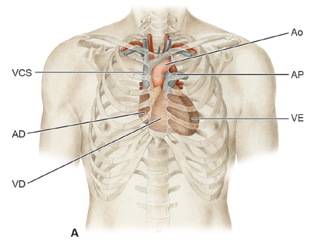
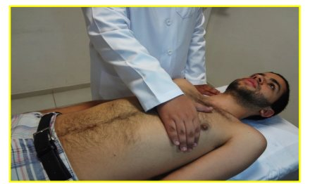
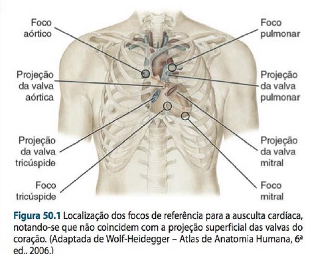
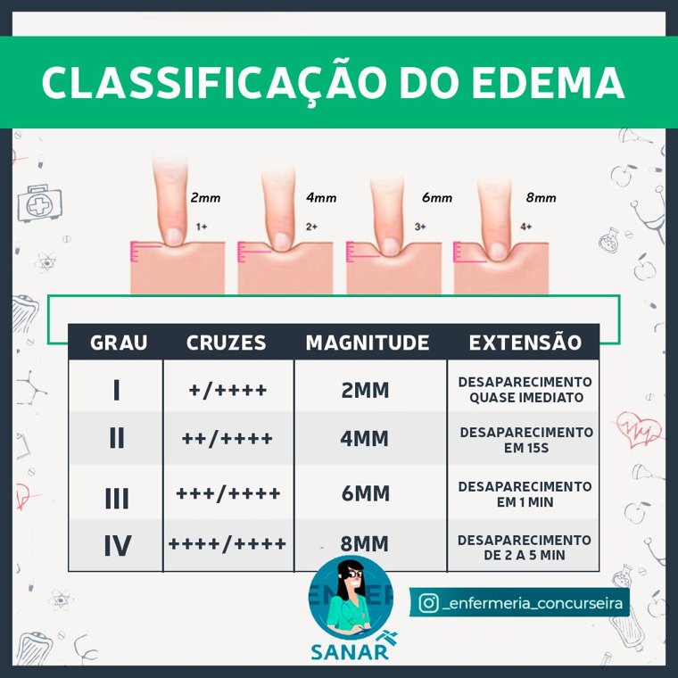
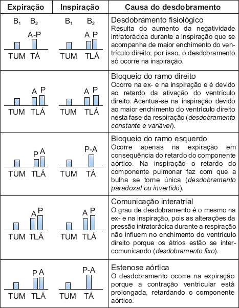
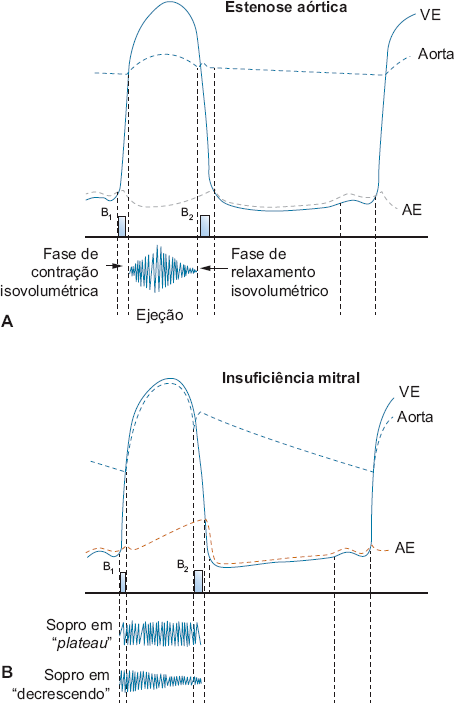
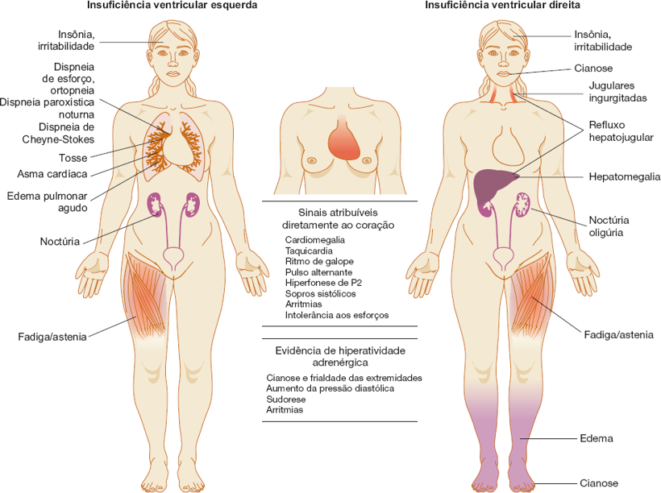

Como fazer o exame físico pulmonar e cardiovascular
A técnica de cada manobra, passo a passo, com a figura de referência ao lado. Para cada etapa: o que fazer, o achado normal e o sinal de alerta. A seção cardiovascular traz ainda bulhas e sopros com gráficos e áudio.
Conteúdo e figuras extraídos dos seus arquivos e do capítulo de exame do coração do Porto — Exame Clínico (8ª ed.).
Sistema respiratório
Exame físico pulmonar
Preparo
ANTES DE TOCAR
Ambiente e posicionamento
Apresente-se ao paciente e ao preceptor; higienize as mãos; peça permissão.
Ambiente silencioso e bem iluminado; exponha o tórax (auscultar sobre a roupa é falha técnica).
Paciente sentado. Oriente a respirar pela boca entreaberta, mais profundo que o normal e sem ruídos vocais.
Normal
Paciente colaborativo, tórax exposto, respiração ampla e silenciosa.
Alerta
Ruído ambiente e respiração superficial mascaram sons sutis.
01
INSPEÇÃO ESTÁTICA
Forma e simetria do tórax
Posicione-se à frente e nas laterais; observe a forma (diâmetro AP × látero-lateral), a simetria dos hemitórax, lesões de pele e circulação colateral.
Compare mentalmente com os padrões: normal (AP < LL) contra tonel, pectus, cifótico.
Cheque também a coluna (cifose/escoliose), que altera a mecânica ventilatória.
Normal
Tórax normolíneo, AP menor que LL, simétrico, sem deformidades nem lesões; acianótico; sem baqueteamento.
Expansibilidade (dorso): mãos espalmadas sobre as costelas, polegares próximos à coluna, deixando uma pequena prega de pele solta entre eles. Divida em terços. Peça inspiração profunda e observe se os polegares se afastam simetricamente.
Complacência: uma mão à frente e a outra espalmada no espaço interescapulovertebral (terço médio), aplicando leve pressão.
FTV: use a face palmar dos dedos; peça “trinta e três”; percorra pontos simétricos comparando os hemitórax.
Normal
Sem dor/tumorações; expansibilidade e complacência simétricas; FTV presente e simétrico.
Manobra de expansibilidade: polegares junto à coluna, prega de pele solta.Sequência de pontos simétricos do FTV (anterior e posterior).
04
PERCUSSÃO
Técnica dígito-digital e sonoridade
Técnica dígito-digital: apoie firme o dedo plexímetro sobre o espaço intercostal e percuta sua falange com a ponta do dedo plexor, usando o movimento do punho.
Percussão indireta e simétrica, em escada crânio-caudal, comparando hemitórax homólogos (6 regiões anteriores, 8 posteriores e laterais).
Use o ângulo de Louis (2ª costela) para contar os espaços.
Normal
Som claro pulmonar bilateral; macicez fisiológica no precórdio; timpanismo no espaço de Traube (6º EIC esq.).
Sequência de percussão e ausculta em “barra grega”.Topografia dos sons: vesicular (V), broncovesicular (BV) e brônquico (B).
Sistema cardiovascular
Exame físico cardiovascular
Preparo
SEQUÊNCIA E POSIÇÕES
Como conduzir e por que a percussão saiu de cena
A rotina é inspeção → palpação → ausculta. A percussão do precórdio foi abandonada: só detecta grandes cardiomegalias e foi superada por radiografia/ecocardiograma.
1) Sentado: extremidades, pulsos, PA e pescoço. 2) A 45° (Fowler): jugulares e inspeção do tórax. 3) Decúbito dorsal: precórdio, ausculta e MMII.
Posições extras conforme o alvo: sentado inclinado à frente realça a base (insuf. aórtica); decúbito lateral esquerdo realça a ponta (ruflar da estenose mitral, B3); de pé debruçado aproxima o coração da parede quando as bulhas estão hipofonéticas.
Higienize as mãos antes e depois, peça permissão e use EPI.
Normal
Exame fluido, com transições únicas de posição.
Alerta
Auscultar sobre a roupa e mudar o paciente de posição a todo momento comprometem o exame.

Projeção do coração e grandes vasos na parede torácica (o VD ocupa a face anterior; a ponta é do VE).
01
INSPEÇÃO + PALPAÇÃO DO ICTUS
Localizar e caracterizar o choque da ponta
Faça inspeção e palpação juntas. Procure abaulamentos em duas incidências: tangencial (de pé, à direita) e frontal (aos pés do paciente).
Localização por biotipo: mediolíneo → 5º EIC na linha hemiclavicular (LHC); brevilíneo → ~2 cm para fora e para cima, no 4º EIC; longilíneo → 5º EIC, 1–2 cm para dentro da LHC. Pode ser impalpável em enfisema, obesidade, muita musculatura, mamas volumosas e no idoso; em ~30% dos saudáveis não se detecta em decúbito dorsal.
Técnica: em decúbito dorsal, palpe com a face palmar de vários dedos. Se não achar, peça decúbito lateral esquerdo, expiração completa e apneia por alguns segundos (lembre que essa posição desloca o ictus para fora); afaste a mama se necessário.
Extensão: conte as polpas digitais para cobri-lo — 1 a 2 polpas (2–3 cm) é normal; ≥3 indica hipertrofia; toda a palma sugere grande dilatação. Mobilidade: marque o ponto em decúbito dorsal e nos dois decúbitos laterais (normal desloca 1–2 cm; não desloca na sínfise pericárdica).
Pesquise ainda: frêmito cardiovascular (“frêmito catário”, como o ronronar de um gato) nos 4 focos — caracterize localização, momento no ciclo (comparando com o pulso carotídeo) e intensidade em cruzes; e choque valvar palpável (bulha hiperfonética sentida como choque curto).
Normal
Ictus no 5º EIC esq. na LHC, 1–2 polpas, normodinâmico, desloca 1–2 cm; sem frêmitos.
Alerta
Ictus difuso (≥3 polpas)/desviado para baixo e fora = HVE com dilatação · mais forte no mesmo lugar = HVE sem dilatação · levantamento em massa paraesternal e retração apical (báscula) = hipertrofia do VD · frêmito = sopro intenso.
Padrões do ictus (Porto, Fig. 16.24): A normal · B levantamento em massa na HVD · C HVE sem dilatação (mais forte) · D HVE com dilatação (desviado para baixo/fora e amplo).

Técnica de palpação do ictus com a face palmar dos dedos.
02
PESCOÇO
Jugulares a 45° e pulso venoso
Cabeceira a 45°, cabeça levemente rodada para a esquerda, luz tangencial.
Observe a coluna de pulsação da jugular interna direita (alinhada com a VCS e o átrio direito); avalie ingurgitamento/turgência — só tem valor de hipertensão venosa se persiste na posição semissentada/sentada.
Diferencie do pulso carotídeo (palpável e único) e reconheça as ondas venosas (a, c, v) e as descidas (x, y).
Normal
Sem turgência a 45°, pulsações venosas fisiológicas.
Alerta
Turgência que persiste sentado = hipertensão venosa (IC direita) · refluxo hepatojugular positivo · onda ‘a’ ausente = fibrilação atrial · onda ‘v’ ↑ = insuf. tricúspide.
03
PALPAÇÃO PERIFÉRICA
Pulsos, temperatura, enchimento e PA
Toque as extremidades: temperatura e enchimento capilar (normal < 2–3 s).
Palpe os pulsos bilaterais (radial, braquial, carótida, femoral, poplíteo, tibial posterior, pedioso). Avalie parede arterial, frequência (1 min), ritmo, amplitude, tensão, tipo de onda e simetria; pesquise déficit de pulso (FC > pulso radial).
PA: palpatória (estime a PAS) e depois auscultatória — insufle 20–30 mmHg acima e desinsufle 2–4 mmHg/s.
Normal
Extremidades aquecidas, EC < 2 s; pulsos cheios e simétricos (2+/4+); sem déficit; PA normal.
Alerta
Extremidades frias = baixo débito · parvus/filiforme = choque · alternante = disfunção do VE · paradoxal = tamponamento · déficit de pulso = fibrilação atrial.
04
AUSCULTA — REGRAS E FOCOS
Onde ouvir, com qual receptor e em que ordem
Receptor: use o diafragma na rotina (alta frequência) e a campânula apenas apoiada (baixa frequência: B3, B4, ruflar da estenose mitral). Comprimir a campânula a transforma em diafragma. Sempre na pele, nunca sobre a roupa.
Focos: Mitral (5º EIC esq. na LHC = ictus) · Pulmonar (2º EIC esq.) · Aórtico (2º EIC dir.) · Aórtico acessório (3º EIC esq., junto ao esterno) · Tricúspide (base do apêndice xifoide). Os focos são pontos de referência e não coincidem com a projeção das valvas (concentrada no 1/3 inferior do esterno) — ausculte todo o precórdio.
Respiração: sons e sopros do coração direito aumentam na inspiração (base da manobra de Rivero-Carvallo).
Sistematize: reconheça ritmo e FC pela B1/B2 → identifique arritmia → se houver B3, procure ritmo de galope → analise as bulhas → identifique cliques, estalidos, sopros e atrito → relacione com lesões.
Normal
Bulhas normofonéticas em 2 tempos (B1 e B2), ritmo regular, sem B3/B4, sopros ou atrito; normocárdico (60–100 bpm). Desdobramento fisiológico de B2 na inspiração é normal.
Alerta
Arritmia (irregular) → FA/extrassístoles · taqui >100 / bradi <60 · qualquer sopro, B3/B4, clique, estalido ou atrito merece caracterização.

Focos de ausculta na parede torácica.Ciclo cardíaco (Porto, Fig. 16.29): pressões, bulhas B1–B4, ECG e abertura/fechamento valvar ao longo de sístole e diástole.
05
MEMBROS INFERIORES
Edema, perfusão e pulso pedioso
Inspecione edema, varizes e coloração.
Palpe o pulso pedioso e a temperatura periférica.
Pesquise o cacifo pressionando a região maleolar/tibial contra o osso; gradue em cruzes (+ a ++++).
Normal
Sem edema; pulso pedioso presente; extremidades aquecidas.
Alerta
Edema mole, inelástico, indolor, vespertino, bilateral = IC direita · assimétrico = causa vascular local.

Classificação do edema por cacifo em cruzes.
Ausculta · achados anormais
Bulhas e sopros — gráficos e sons
Fonocardiograma esquemático + explicação + áudio real para treinar o ouvido. Nos gráficos, a faixa cinza é a sístole; barras escuras são B1/B2, barras vinho são bulhas acessórias e as áreas vinho são os sopros.
Ciclo cardíaco e bulhas normais
MECANISMO
B1 e B2 — como se formam
B1 = fechamento das valvas atrioventriculares (mitral antes da tricúspide), no início da sístole; coincide com o ictus e com o pulso carotídeo, tem timbre grave e é mais intensa no foco mitral — imita-se por “TUM”. B2 = fechamento das semilunares (aórtica antes da pulmonar), início da diástole; timbre mais agudo e seco, mais intensa nos focos da base — “TÁ”. A sequência normal é TUM-TÁ, TUM-TÁ. Em ~50% das pessoas saudáveis a B1 é levemente desdobrada (sem relação com a respiração).
Correlação de pressões, ECG e bulhas ao longo do ciclo (Porto, Fig. 16.29).
Referência
B1 e B2 — ritmo normal (2 tempos)
Padrão de referência: “TUM-TÁ”, com o pequeno silêncio (sístole) menor que o grande silêncio (diástole). Compare todos os achados anormais a este.
B1 · B2 normofonéticas
Desdobramento da 2ª bulha
FOCO PULMONAR
Fisiológico e patológicos
Estuda-se no foco pulmonar, onde se ouvem A2 e P2. Fisiológico/inspiratório: na inspiração, o maior retorno ao VD atrasa P2 e separa os componentes (“TUM-TLÁ”), voltando a ser único na expiração. Patológicos: constante e variável (bloqueio de ramo direito), fixo (comunicação interatrial — não varia com a respiração), invertido/paradoxal (bloqueio de ramo esquerdo — aparece na expiração) e o da estenose pulmonar/aórtica (prolongamento da sístole ventricular).

Desdobramentos de B2 na área pulmonar e suas causas (Porto, Fig. 16.47).
Ritmos tríplices e galope — bulhas acessórias
CONCEITO
B3, B4 e ritmo de galope
Um 3º ruído diastólico transforma o ritmo binário em tríplice. A B3 (protodiastólica) nasce do enchimento ventricular rápido — normal em crianças/jovens/gestantes; patológica em corações dilatados/mais complacentes (“mais moles”: insuf. mitral, miocardiopatia, shunts E→D). A B4 (pré-sistólica) vem da contração atrial contra um ventrículo rígido (“mais duro”: HAS com hipertrofia, isquemia, estenose aórtica). Quando a bulha acessória é patológica e ganha cadência de galope de cavalo (PÁ-TÁ-TÁ), fala-se em ritmo de galope — melhor com a campânula, na ponta/borda esternal esquerda, em decúbito lateral esquerdo; é “um pedido de socorro do coração”.
Bulhas acessórias
B3 — galope ventricular (protodiastólico)
Logo após B2, no enchimento rápido; cadência “TUM-TÁ-TU” (Ken-tu-cky). Galope ventricular = B3 patológica → disfunção sistólica / sobrecarga de volume. Campânula, foco mitral, decúbito lateral esquerdo; pode acentuar na inspiração se for de origem direita.
B3 isolada (galope)
Ritmo com B3
B3 na inspiração
Bulhas acessórias
B4 — galope atrial (pré-sistólico)
No fim da diástole, antes de B1; cadência “TÁ-TUM-TÁ” (Ten-nes-see). B4 patológica → ventrículo rígido (HAS com hipertrofia, estenose aórtica, isquemia). Campânula, foco mitral.
B4 isolada (galope)
Ritmo com B4
Bulhas acessórias
Galope de soma (B3 + B4)
Com taquicardia a diástole encurta e B3+B4 se fundem num único som mesodiastólico — indica comprometimento ventricular importante.
Galope de soma (B3+B4)
Alterações de intensidade das bulhas
INTENSIDADE (FOCOS MITRAL/TRICÚSPIDE)
B1 — o que a torna forte ou fraca
O fator principal é a posição das valvas AV no início do fechamento (relaciona-se ao intervalo PR): PR curto, taquicardia, hipertireoidismo, extrassístoles e estenose mitral → B1 hiperfonética (na EM, também metálica e seca). Ficam hipofonéticas com PR longo, miocardite/IAM/insuficiência cardíaca (subida lenta da pressão) e calcificação valvar intensa. Na fibrilação atrial a intensidade varia de sístole para sístole (“delirium cordis”). Tórax delgado → mais intensa; obesidade, enfisema e derrame → mais fraca. Um sopro sistólico de regurgitação pode mascarar B1.
INTENSIDADE (FOCOS DA BASE)
B2 — intensidade nas bases
Analise nos focos aórtico e pulmonar. Hiperfonese de A2 na hipertensão arterial sistêmica; hiperfonese de P2 na hipertensão pulmonar. Valvas calcificadas movem-se pouco → som fraco (na estenose aórtica calcificada, A2 pode ficar inaudível). Na criança, B2 é mais intensa no foco pulmonar; no adulto/idoso, no aórtico.
Sopros — mecanismo e semiologia
MECANISMO
Como se formam
O fluxo laminar normal não faz ruído; o sopro surge quando há turbulência: aumento da velocidade (exercício, anemia, febre, hipertireoidismo), queda da viscosidade, passagem por zona estreitada (ou por orifício normal com hiperfluxo — estenose “relativa”), por zona dilatada ou por membrana de borda livre. Em geral vários mecanismos se somam.
Mecanismos do sopro (Porto, Fig. 16.48): A laminar (sem sopro) · B estenose · C dilatação · D obstáculo intraluminar.
SEMIOLOGIA
Os 7 parâmetros para descrever um sopro
1. Situação no ciclo (o passo mais importante) — palpe a carótida junto com a ausculta para separar sístole de diástole: sistólico, diastólico ou sistodiastólico/contínuo. 2. Localização (área de maior intensidade). 3. Irradiação — estenose aórtica → pescoço; insuf. mitral → axila. 4. Intensidade em cruzes: +/4 (débil) · ++/4 (moderado) · +++/4 (intenso) · ++++/4 (muito intenso, com frêmito). 5. Timbre e tom — suave, rude, granular, musical, aspirativo, em jato de vapor, piante, ruflar. 6. Respiração/posição/exercício. 7. Relação com bulhas e frêmito.
SÍSTOLE
Sopros sistólicos: ejeção × regurgitação
Ejeção (estenose aórtica/pulmonar): começa após B1 (contração isovolumétrica), é crescendo-decrescendo e termina antes de B2. Regurgitação (insuf. mitral/tricúspide, CIV): holossistólico em platô, começa junto com B1, recobrindo-a, e vai até B2.

Sopros sistólicos (Porto, Fig. 16.49): A ejeção (crescendo-decrescendo) na estenose aórtica · B regurgitação (platô/decrescendo) na insuf. mitral.
Sopros sistólicos
Ejetivo — estenose das semilunares (aórtica/pulmonar)
Mesossistólico em crescendo-decrescendo (diamante). Estenose aórtica: foco aórtico, rude/granular, irradia para as carótidas, A2 diminuída, pulso parvus et tardus.
Sopro sistólico ejetivo
Sopros sistólicos
Regurgitação — insuficiência mitral
Holossistólico em platô, mascara B1; foco mitral com irradiação para a axila. Se houver hipertensão pulmonar, P2 hiperfonética.
Sopro sistólico — insuf. mitral
Sopros diastólicos
Insuficiência das semilunares (aórtica/pulmonar)
Protodiastólico em decrescendo, aspirativo, logo após B2 — “TUM-TÁÁÁ”. Insuf. aórtica: borda esternal esq., melhor sentado, inclinado à frente e em apneia expiratória.
Sopro diastólico — insuf. semilunar
Sopros diastólicos
Estenose das valvas AV (mitral/tricúspide)
Ruflar mesodiastólico grave com reforço pré-sistólico, iniciado por estalido de abertura. Estenose mitral: campânula, foco mitral, decúbito lateral esquerdo; o exercício intensifica.
Sopro diastólico — estenose AV
DIFERENCIAR IT de IM
Manobra de Rivero-Carvallo
Com o receptor no foco tricúspide, peça uma inspiração profunda: se o sopro aumenta, é da tricúspide (manobra positiva); se não muda ou diminui, é propagação de um sopro mitral. Baseia-se no maior afluxo ao coração direito na inspiração.
Cliques, estalidos, atrito e rumor venoso
RUÍDOS EXTRAS
Cliques e estalidos
Estalido de abertura mitral: agudo, seco, curto, logo após B2 — sinal mais indicativo de estenose mitral (some com calcificação intensa/HP grave); diferencia-se de B3 (grave, só na ponta) e do desdobramento de B2 (mais tardio, no foco pulmonar). Estalidos protossistólicos (ruídos de ejeção) aórtico/pulmonar: agudos, na base. Clique meso/telessistólico: sugere prolapso da valva mitral, mesmo sem sopro.
DIFERENCIAR DE SOPROS
Atrito pericárdico e rumor venoso
Atrito pericárdico (pericardite fibrinosa): som de couro novo, sisto-diastólico, não coincide exatamente com as fases, muda de qualidade/intensidade de hora em hora e é bem localizado (ponta ↔ borda esternal esq.). Rumor/ruído venoso: contínuo, grave, no pescoço acima da clavícula direita; some ao deitar, comprimir a jugular ou rodar o pescoço — sem significado clínico (diferenciar do sopro contínuo da persistência do canal arterial).
QUANDO NÃO É DOENÇA
Sopros inocentes
Comuns em crianças. Características: sem frêmito, nunca diastólicos, suaves (+ a ++), proto/mesossistólicos (nunca holossistólicos), sem alteração das bulhas e com irradiação restrita. Ainda assim, o rótulo de “inocente” só se firma após avaliação clínica completa.
Resumo auscultatório das valvopatias
Lesão
Momento
Sopro
Foco / irradiação
Outros achados
Estenose mitral
Diastólico
Ruflar mesodiastólico + reforço pré-sistólico
Mitral (campânula, DLE)
B1 hiperfonética/metálica, hiperfonese de P2, estalido de abertura; exercício intensifica
Insuficiência mitral
Sistólico
Regurgitação (holossistólico, mascara B1)
Mitral → axila
P2 hiperfonética se HP; pode haver B3
Estenose aórtica
Sistólico
Ejeção (crescendo-decrescendo), rude/granular
Aórtico → carótidas
A2 diminuída/ausente; ictus intenso; melhor sentado
Áudios fornecidos pelo usuário, para uso didático. Fonocardiogramas são esquemáticos (fora de escala temporal). Texto sintetizado a partir do Porto — Exame Clínico, 8ª ed.
Correlação clínica
Alterações & doenças
As condições abaixo são as citadas no capítulo de exame do coração do Porto — Exame Clínico (8ª ed.). O foco é o pedido: a fisiopatologia básica e, principalmente, os achados clínicos (semiologia) e a semiotécnica para reconhecê-los.
Insuficiência cardíaca (IC)
POR QUE OS SINAIS APARECEM
Fisiopatologia — o essencial
A IC começa quando há desproporção entre a carga hemodinâmica e a capacidade do miocárdio. O organismo compensa com taquicardia, hipertrofia das fibras, ativação do sistema renina-angiotensina-aldosterona e hiperatividade adrenérgica; a persistência do agressor leva ao remodelamento miocárdico. Quando a compensação é superada, instala-se a síndrome. O coração tolera melhor sobrecarga de volume (ex.: insuf. aórtica, que fica anos assintomática) do que de pressão (ex.: estenose aórtica, que descompensa mais cedo); sobrecargas agudas (ruptura de cordoalha no IAM) descompensam rápido. Classifica-se em ICFEr (fração de ejeção reduzida, disfunção sistólica) e ICFEp (fração preservada, disfunção diastólica — ~30% dos casos, mais em mulheres e idosos).

Quadro clínico da IC (Porto, Fig. 16.52): sinais da insuf. ventricular esquerda × direita e os sinais atribuíveis diretamente ao coração.
SEMIOLOGIA — COMUNS ÀS DUAS
Sinais atribuíveis ao coração
Taquicardia (mecanismo compensador mais elementar), ritmo de galope (B3 patológica — surge cedo e tem grande valor diagnóstico), pulso alternante (batimento forte alternando com fraco — disfunção do VE), convergência pressórica (queda da PA sistólica + aumento da diastólica pela vasoconstrição), hiperfonese de P2 (hipertensão pulmonar), sopros sistólicos, cardiomegalia (ictus difuso/desviado), arritmias e intolerância aos esforços. A hiperatividade adrenérgica se traduz por cianose e frialdade das extremidades, sudorese e aumento da PA diastólica.
SEMIOLOGIA — CONGESTÃO PULMONAR
Insuficiência ventricular esquerda
Origina-se da congestão venocapilar pulmonar. A dispneia é a queixa central, nas formas: de esforço (progressiva, aos grandes→pequenos esforços), de decúbito/ortopneia (obriga a dormir com vários travesseiros), paroxística noturna (desperta o paciente após horas de sono, com falta de ar intensa) e de Cheyne-Stokes (periódica, na IC grave). Acompanha-se de tosse seca (após esforço ou ao deitar), expectoração hemoptoica (congestão intensa/edema agudo), estertores finos nas bases (sinal mais precoce de congestão) e, por broncospasmo, asma cardíaca (sibilos e expiração prolongada).
SEMIOLOGIA — CONGESTÃO SISTÊMICA
Insuficiência ventricular direita
Denominador comum: hipertensão venosa + retenção de sódio e água. Achados: ingurgitamento/turgência jugular (só tem valor se persiste sentado), hepatomegalia congestiva (superfície lisa, borda fina, dolorosa), refluxo hepatojugular, edema (mole, inelástico, indolor, vespertino, começa nos MMII / região pré-sacra no acamado, podendo chegar à anasarca), derrames cavitários (hidrotórax, ascite, derrame pericárdico) e cianose periférica. A repercussão subjetiva é menor que na IVE: cansaço, dor no hipocôndrio direito (distensão da cápsula de Glisson), anorexia, oligúria.
COMO PESQUISAR
Semiotécnica dirigida à IC
Ritmo de galope: campânula apoiada com suavidade na ponta/borda esternal esquerda, em decúbito lateral esquerdo (não comprimir). Pulso alternante: perceptível ao palpar o pulso radial ou desinsuflando lentamente o manguito. Turgência jugular: avalie a 45° e confirme na posição sentada. Refluxo hepatojugular: comprima o hipocôndrio direito por ~10 s e observe o aumento sustentado da coluna jugular. Estertores: ausculte as bases; edema: cacifo na região maleolar/tibial, graduando em cruzes.
A base é o desequilíbrio entre oferta e demanda de oxigênio pelo miocárdio, quase sempre por aterosclerose coronariana. Na doença crônica estável, uma placa estável limita o fluxo sob esforço (angina estável). Na SCA, ocorre ruptura/erosão da placa com formação de trombo: se a oclusão é parcial/transitória → angina instável ou infarto sem supra de ST (IAMSSST); se é total e persistente → infarto com supra de ST (IAMCSST), com necrose transmural. A isquemia reduz a complacência e a contratilidade ventricular — o que explica os achados de ausculta.
SEMIOLOGIA — A DOR É O EIXO
Achados clínicos
A manifestação-chave é a dor anginosa: retroesternal, em aperto/constrição/peso (o paciente costuma fechar a mão sobre o peito — sinal de Levine), com irradiação para membro superior esquerdo, mandíbula, pescoço ou dorso. Na angina estável dura poucos minutos e alivia com repouso/nitrato; na SCA é mais intensa, prolongada (>20 min) e/ou em repouso, acompanhada de sudorese fria, náuseas, dispneia e sensação de morte iminente. Atenção aos equivalentes anginosos (dispneia, mal-estar, dor epigástrica), mais comuns em idosos, diabéticos e mulheres. O exame físico do coração pode ser normal.
SEMIOTÉCNICA — O QUE PROCURAR
Achados ao exame do coração
Quando presentes, os achados refletem a disfunção isquêmica: B4 (isquemia reduz a complacência → ventrículo “duro”), eventual B3 (disfunção sistólica), hipofonese de B1 e B2, sopro sistólico de regurgitação mitral transitório (disfunção/ruptura de músculo papilar) e arritmias. Um atrito pericárdico sugere pericardite reacional pós-infarto. Pesquise ativamente sinais de IC e de baixo débito/choque: taquicardia, ritmo de galope, estertores, hipotensão, extremidades frias e sudorese. Semiotécnica da dor: caracterize localização, tipo, irradiação, início/duração, fatores de melhora e piora e sintomas associados; palpe pulsos e afira a PA nos dois braços.
Outras alterações e doenças citadas
RITMO
Arritmias — reconhecimento clínico
O ECG confirma, mas o exame físico orienta. Fibrilação atrial: ritmo totalmente irregular, intensidade de B1 variável (delirium cordis) e frequente déficit de pulso (FC > pulso radial); a onda ‘a’ do pulso venoso desaparece. Extrassístoles: batimento prematuro seguido de pausa; as muito precoces são “ineficazes” (só B1, sem onda de pulso). Taquicardia >100 / bradicardia <60 bpm. No bloqueio AV total: bradicardia, ondas ‘a’ em canhão no pulso venoso e B1 de intensidade variável.
PERICÁRDIO
Pericardite e pericardite constritiva
Pericardite fibrinosa:atrito pericárdico — som de couro novo, sisto-diastólico, muito mutável e bem localizado (ponta ↔ borda esternal esquerda). Pericardite constritiva: ruído protodiastólico seco (distensão do pericárdio rígido), restrito à área mitral/endoápex; e sinais de congestão sistêmica. Derrame pericárdico volumoso: ictus invisível/impalpável e bulhas hipofonéticas (pode evoluir para tamponamento, com pulso paradoxal e turgência jugular).
SOPROS
Valvopatias
As dez lesões valvares e congênitas citadas (estenose e insuficiência de mitral, aórtica, tricúspide e pulmonar; CIA, CIV e persistência do canal arterial) estão resumidas na tabela da aba “Sons & sopros”, com momento no ciclo, tipo de sopro, foco/irradiação e achados associados.
GRANDES VASOS
Doença da aorta
A aorta ascendente e a crossa são acessíveis: procure abaulamentos pulsáteis no terço superior do esterno e na fúrcula (sugestivos de aneurisma). Pulsações visíveis/palpáveis na fúrcula ocorrem na esclerose senil, na aortopatia hipertensiva e na insuficiência aórtica. Aneurismas da crossa podem cursar com rouquidão (nervo recorrente), tosse/dispneia (brônquio) e disfagia (esôfago), mesmo sem sinais ao exame.
MIOCARDIOPATIA
Cardiopatia chagásica crônica
Exemplo clássico de miocardiopatia que cursa desde cedo com insuficiência dos dois ventrículos (IC global), arritmias (extrassístoles, bloqueios) e cardiomegalia globosa. É uma das causas mais comuns de FA, bloqueio AV e bloqueio de ramo no nosso meio.
Base: Porto — Exame Clínico, 8ª ed. (capítulo de exame do coração). A fisiopatologia da SCA é apresentada de forma introdutória, para ancorar os achados semiológicos; aprofunde nos capítulos de sinais e sintomas e na cardiologia.